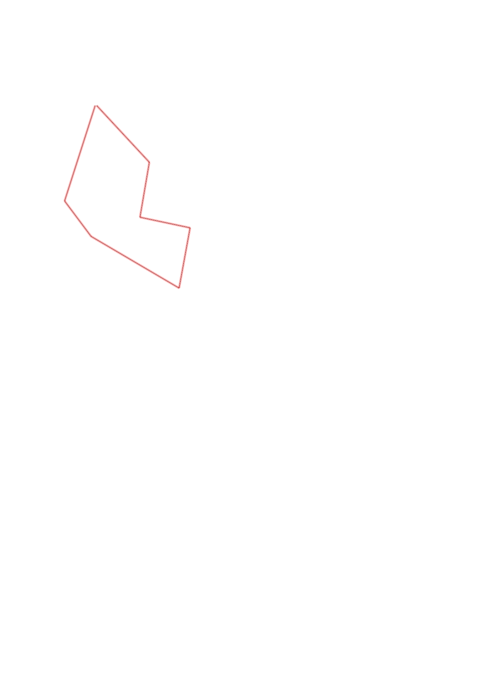
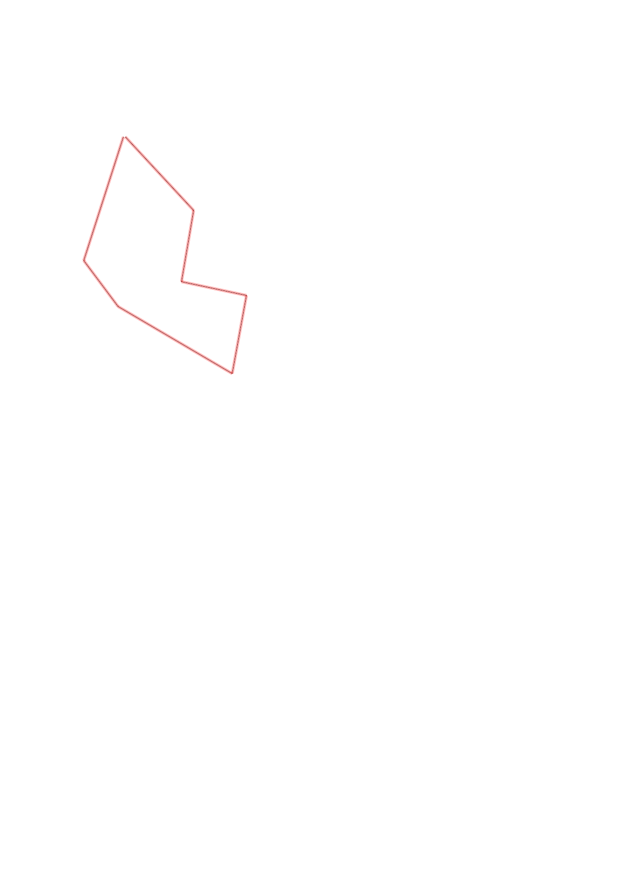

| Control |
Points |
Time Punched |
Distance |
Your Time |
Pace |
Place |
Fastest Time |
Median Time |
% Behind Fastest |
| 51 |
50 |
|
0.61 |
0:08:37 |
14:07 |
2 / 2 |
0:08:24 |
0:08:30 |
2% |
| 41 |
40 |
|
0.27 |
0:07:07 |
26:21 |
3 / 3 |
0:02:52 |
0:04:51 |
148% |
| 75 |
70 |
|
0.63 |
0:10:45 |
17:03 |
1 / 1 |
0:10:45 |
0:10:45 |
0% |
| 43 |
40 |
|
0.38 |
0:06:48 |
17:53 |
5 / 5 |
0:02:11 |
0:02:57 |
211% |
| 36 |
30 |
|
0.31 |
0:06:24 |
20:38 |
2 / 2 |
0:01:58 |
0:04:11 |
225% |
| 42 |
40 |
|
0.34 |
0:13:23 |
39:21 |
1 / 1 |
0:13:23 |
0:13:23 |
0% |
| Finish |
0 |
|
0.47 |
0:05:56 |
12:37 |
9 / 9 |
0:02:13 |
0:03:12 |
167% |
Total Distance Covered: 3.01km
Points Scored: 270
Late Penalty: 0
Final Score: 270
Total Time: 0hours 59minutes 0seconds
Efficiency: 89.7 points/km
 
